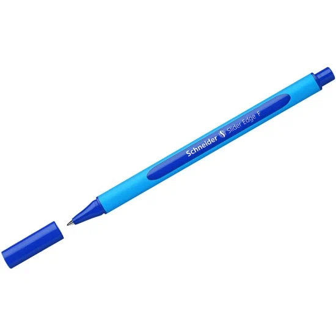

Подходит для лекций, конспектов, домашних заданий и ежедневных записей.
Хит

Категория: Ручки
Schneider Slider — набор ручек, 4 шт.
Набор синих шариковых ручек для школы, университета и повседневных записей. Подходит для конспектов, домашних заданий и работы с документами.
- Четыре ручки в комплекте
- Синие чернила
- Подходит для учёбы и повседневных записей
В наличии
307 ₽
Технические данные
Характеристики
| Параметр | Значение | Комментарий |
|---|---|---|
| Категория | Ручки | Письменные принадлежности |
| Бренд | Schneider | Канцелярские принадлежности |
| Тип | Шариковая ручка | Для повседневного письма |
| Цвет чернил | Синий | Подходит для конспектов и записей |
| Количество | 4 шт. | Набор из четырёх ручек |
| Наличие | В наличии | Доступно для оформления заявки |
| Рейтинг | 4,9 / 5 | Высокая оценка товара |
| Цена | 307 ₽ | Цена указана за комплект |
Преимущества
Почему этот товар удобен
Несколько ручек в одном наборе удобно использовать дома, в школе или университете.
Товар имеет оценку 4,9 из 5 и относится к популярным позициям каталога.
Хотите оформить этот товар?
Перейдите к форме заявки, укажите контактные данные и выберите Schneider Slider в списке товаров.